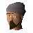

Tenzing

| Config name | death_sherpa |
| NPC id | 1071 |
| Combat level | hidden |
| Options | Talk-to |
| Wander range | 5 tiles from spawn |
| Defined in | scripts/quests/quest_death/configs/quest_death.npc |
Tenzing
An experienced Sherpa.
Show all 1 spawn on the world map → Open in knowledge graph →
Locations
| Area | Coordinates | Level | Count | Map |
|---|---|---|---|---|
| Death Plateau | 2820, 3556 | 0 | 1 | view |
Dialogue
PlayerHello Tenzing!
TenzingHello again traveller. What can I do for you?
PlayerCan I buy some Climbing boots?
TenzingSure, I'll sell you some in your size for 12 gold.
PlayerOK, sounds good.
PlayerI don't have the money on me.
PlayerNo, thanks.
PlayerWhat does a Sherpa do?
TenzingWe are expert guides that take adventurers, such as yourself, on mountaineering expeditions.
PlayerHow did you find out about the secret way?
TenzingI used to take adventurers up Death Plateau and further north before the trolls came. I know these mountains well.
PlayerNice place you have here.
TenzingThanks, I built it myself! I'm usually self sufficient but I can't earn any money with the trolls camped on Death Plateau.
PlayerNow that the Imperial Guard know about the secret way they will be able to destroy the trolls!
TenzingLet us hope so traveller!
PlayerNothing, thanks!
TenzingWas there anything else?
PlayerHello Tenzing!
TenzingHello again traveller. What can I do for you?
PlayerI've lost the secret way map.
TenzingNever mind. I'll quickly draw you another one.
PlayerI'm lost!
TenzingTo get back to Burthorpe follow the path going east.
TenzingI thought you were going to investigate the secret way to Death Plateau? Use the back door to my hut, hop over the stile and follow that path.
PlayerOh yes, of course! Thanks!
PlayerNothing, thanks.
TenzingGo in peace traveller.
PlayerHello!
TenzingHello traveller. Thanks again for the food and boots.
PlayerYou said you would show me the secret way to Death Plateau?
TenzingYes, of course! I drew up a map in case I ever needed to use it again.
TenzingI don't think the Trolls have found the secret way yet, if they had I would've been attacked by now.
PlayerOK thanks but I think I'd better check the path. I don't want to send the Imperial Guards to their death!
TenzingYou are wise for one so young.
PlayerHello!
TenzingHave you brought me the items I asked for?
PlayerI've lost the climbing boots.
TenzingThese are expensive, do not lose another pair!
TenzingThank you very much traveller. I'm now ready for the winter!
PlayerI don't have the:
PlayerHello!
TenzingHas Dunstan added spikes to my climbing boots yet?
PlayerNo, not yet.
TenzingWell, when he has, bring the boots to me with ten loaves of bread and ten cooked trout. I have to prepare for the winter, after all.
PlayerHello!
TenzingHello. How can I help?
PlayerI'm helping the Imperial Guard. They need to find a way to sneak up Death Plateau to destroy the troll camp! Saba seemed to think you'd be able to help.
TenzingAh...Saba is still alive and kicking?
PlayerYeh, he seemed very bitter.
TenzingThat's Saba alright!
TenzingI do know of a secret way up to Death Plateau, the Imperial Guard would be able to use it at night and not be seen until it was too late!
TenzingI'd be happy to show you it if you do something for me first.
PlayerName it.
TenzingI don't get into town much and I'm getting low on supplies. I need ten loaves of bread and ten cooked trout, that should see me through the winter.
PlayerAnything else?
TenzingYes. My climbing boots need to have new spikes, so can you take them to Dunstan in Burthorpe? He always puts my spikes on for me.
PlayerOK, I'll get those for you.
TenzingThank you traveller!
PlayerI'll find the secret way for myself.
TenzingHmph.
Quests
Referenced in scripts
scripts/quests/quest_death/scripts/death_sherpa.rs2scripts/quests/quest_death/scripts/quest_death.rs2